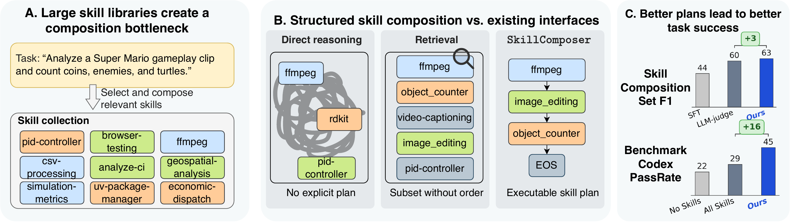
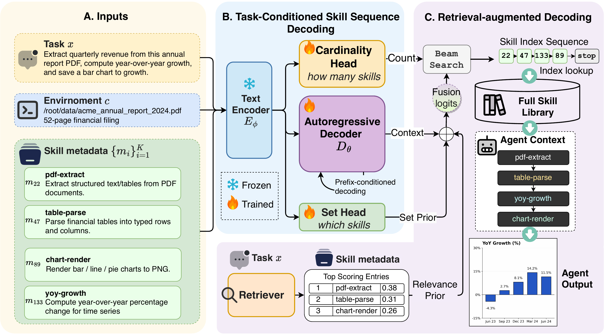
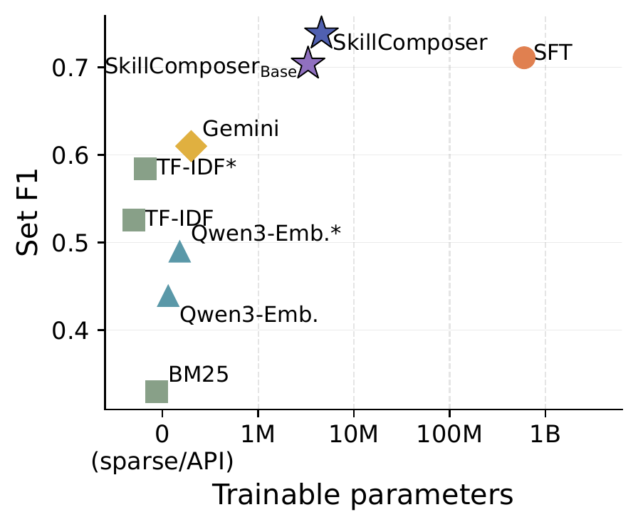
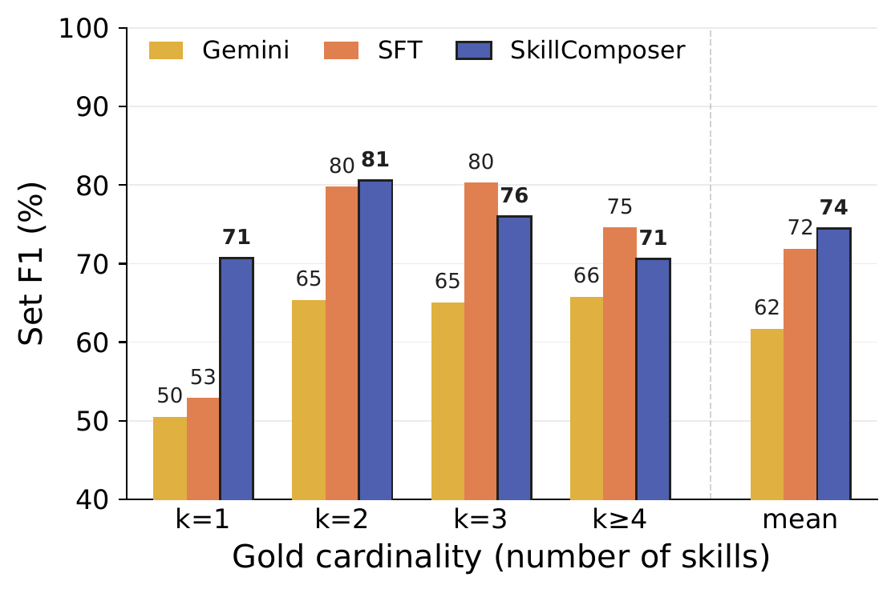

Generative Skill Composition for LLM Agents
As skill libraries grow, the bottleneck shifts from obtaining skills to composing them—deciding which skills to load, how many, and in what order. SkillComposer casts this as task-conditioned skill sequence prediction: a small constrained autoregressive decoder resolves all three jointly in a single pass, matching the gold-skill upper bound at lower prompt-token cost.

Abstract
Recent LLM agents benefit from skills for solving complex tasks. Skills encapsulate modular packages of procedural knowledge and instructions for performing specialized tasks, such as setting up a sandboxed environment, running a test suite, or refactoring a function across multiple files. As skill libraries grow and become reusable across tasks and domains, selecting an appropriate skill composition has emerged as a central bottleneck. Existing approaches fall into two categories: one exposes the agent's reasoning to the entire skill collection; the other performs skill retrieval via embeddings or LLM-based rerankers. Both provide useful insights; however, they miss the structural nature of skill composition, which is a joint decision over which skills, how many, and in what order—three dimensions that cannot be decoupled. We formalize this as structured skill composition: given a task and a skill library, predict an executable skill plan that jointly specifies the activated subset, count, and execution order. We propose SkillComposer, which instantiates structured skill composition as task-conditioned skill sequence prediction. SkillComposer uses a constrained autoregressive decoder over skill identifiers, so subset, count, and order emerge jointly from a single decoding pass, and dependencies between successive skills are captured naturally. We build a training set of task–composition pairs from a real, human-curated skill library, and evaluate SkillComposer along two axes: composition quality on a held-out test set, and downstream task success on SkillsBench across two production-grade coding agents. On {GPT-5.2-Codex, Gemini-3-Pro-Preview}, SkillComposer raises the pass rate by {+23.1, +18.2} pp over the no-skill baseline, surpassing top-3 retrieval and matching the gold-skill retrieval upper bound at lower prompt-token cost.
Contributions
SkillComposer reframes inference-time skill use as a structured prediction problem over a fixed, reusable skill library.
Structured Composition
We formalize inference-time skill use as a structured prediction problem: the output plan jointly determines which skills to activate, how many are needed, and in what order they execute—three coupled dimensions that retrieval and direct reasoning leave implicit.
Library-Grounded Data
9,872 task–composition records over a real, human-curated 196-skill library. Starting from real task-composition seeds, we build a skill dependency graph and use layered synthesis with quality filtering for both single-skill grounding and dependency-aware multi-skill chains.
Generative Composer
A task-conditioned constrained autoregressive decoder over skill identifiers. Auxiliary cardinality and set-membership heads, plus a retrieval-augmented decoding prior, unify subset, count, and ordering while guaranteeing every output is an executable library skill.
Method
SkillComposer encodes the task–library context with a frozen retrieval-tuned encoder, then decodes a variable-length, ordered sequence of skill indices—fusing retrieval and set-membership priors into the decoder logits at inference time.

Key Results
Across two production-grade coding agents, better composition predictions translate into better agent execution—at a smaller prompt budget than retrieval or flooding the context.
Composition is structural, not just selection. A ranked list does not say how many skills to use or in what order. SkillComposer resolves subset, count, and order jointly in one decoding pass, capturing dependencies between successive skills.
A small specialist beats a big generalist under shift. With only 3.9M trainable parameters, SkillComposer matches a 600M SFT model in-distribution and beats it by +19.3 pp Set F1 on held-out real software-engineering tasks—SFT memorizes the synthetic template and collapses.
Better plans translate to better agents. Upstream composition gains carry through to execution: +23.1 / +18.2 pp pass rate on {Codex, Gemini}, closing roughly 80% of the headroom to the gold-skill upper bound.
Accuracy at a lower token budget. SkillComposer matches or exceeds oracle retrieval while using the smallest prompt budget among skill-loaded conditions (1.03M Codex tokens). Flooding the context with all 196 skills recovers little and inflates the prompt to 1.27M tokens.
| Skill condition | GPT-5.2-Codex | Gemini-3-Pro | ||
|---|---|---|---|---|
| Pass (%) ↑ | Tok. ↓ | Pass (%) ↑ | Tok. ↓ | |
| Gold Skills (oracle) | 51.1 | 1.12M | 48.4 | 1.18M |
| No Skills | 22.2 | 0.94M | 25.8 | 0.99M |
| All Skills | 29.3 | 1.27M | 38.7 | 1.33M |
| Retrieval (top-3) | 44.0 | 1.09M | 41.8 | 1.14M |
| SkillComposer (ours) | 45.3 | 1.03M | 44.0 | 1.08M |
Analysis
SkillComposer is Pareto-optimal among predicted-k methods and is most robust exactly where over-emitting skills is most costly.


BibTeX
@misc{zhao2026skillcomposer,
title = {Generative Skill Composition for LLM Agents},
author = {Zhao, Xinyu and Tan, Zhen and Tadiparthi, Vaishnav and Agarwal, Nakul
and Lee, Kwonjoon and Moradi Pari, Ehsan and Nourkhiz Mahjoub, Hossein
and Chen, Tianlong},
year = {2026},
note = {Preprint},
url = {https://skill-composer.github.io/}
}